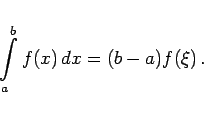
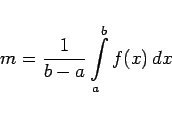
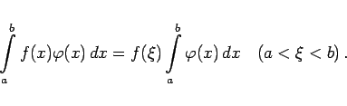

Inhalt Index DeskTop Bronstein

 Integralrechnung Bestimmte Integrale Grundbegriffe, Regeln und Sätze Eigenschaften bestimmter Integrale
Integralrechnung Bestimmte Integrale Grundbegriffe, Regeln und Sätze Eigenschaften bestimmter Integrale


|  | (8.47) |
Der geometrische Sinn dieses Satzes besteht darin, daß es zwischen den Punkten a und b einen Punkt gibt, für den der Flächeninhalt der Figur ABCD gleich dem des Rechtecks AB'C'D in der folgenden Abbildung ist.
Der Wert
|  | (8.48) |
heißt Mittelwert oder das arithmetische Mittel der Funktion f(x) im Intervall  .
.
|  | (8.49) |